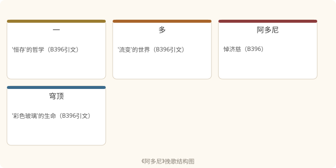

阿多尼
一、基本信息
| 作者 | 珀西·比希·雪莱 |
|---|---|
| 成书/出版 | 1821年（Britannica B396：Adonais——'in Spenserian stanzas'悼济慈） Percy Bysshe Shelley — Encyclopaedia Britannica（百科全书） |
| 国别/地区 | 英国 |
| 时代 | 近代 · 19世纪20年代初 |
| 体裁 | 牧歌挽诗 |
| 语言 | 英语 |

《阿多尼》挽歌结构图（主题·结构图）
二、创作背景
Britannica（B396）：Adonais——'in Spenserian stanzas'悼济慈（1821）——引文'The One remains, the many change and pass;'/'Life, like a dome of many-coloured glass,'。
Britannica（B396）：雪莱——1822年海难——本作为其卒前一年之作。
题材（通说待核）：'阿多尼'（Adonis 原型）——济慈的'青春'之死。
三、内容脉络
（通说待核）牧歌挽诗：'一'恒存而'多'流变（B396：'The One remains, the many change and pass;'）。
（通说待核）'彩色玻璃穹顶'般的生命（B396：'Life, like a dome of many-coloured glass,'）。
四、主要人物表
| 人物 | 身份 | 说明 |
|---|---|---|
| 阿多尼 | 悼亡对象（济慈） | （B396 书名人物——悼济慈） |
五、主题与艺术特点
- '一'恒存与'多'流变（B396 引文）。
- '彩色玻璃穹顶'的生命（B396 引文）。
- 斯宾塞体的挽歌（B396：Spenserian stanzas）。
六、影响与评论
- Britannica：'in Spenserian stanzas'悼济慈（B396）。
Percy Bysshe Shelley — Encyclopaedia Britannica（百科全书） - Britannica：两句引文（B396 已载）。
Percy Bysshe Shelley — Encyclopaedia Britannica（百科全书）
七、阅读建议
难点
- 斯宾塞体九行节。
- '阿多尼'神话原型（通说待核）。
- 《阿多尼》中译名（《阿多奈斯》）待核。
- 英文原版（公有领域）。
雪莱挽歌首选；与《解放了的普罗米修斯》对读。
八、待核实
- 引文两句完整核对（B396已载节选）。
- 1821年出版细节待核。
- '济慈之死'背景核对（B395交叉：1821-02-23罗马肺结核）。